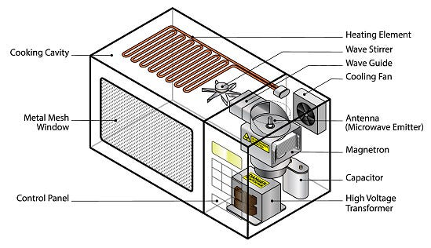
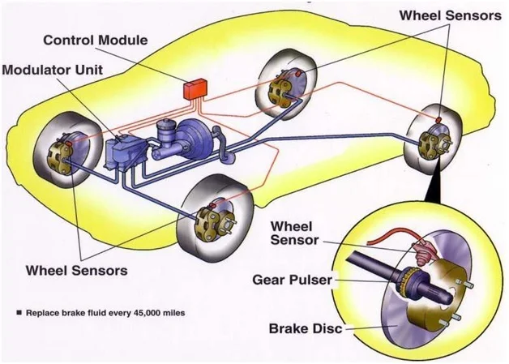
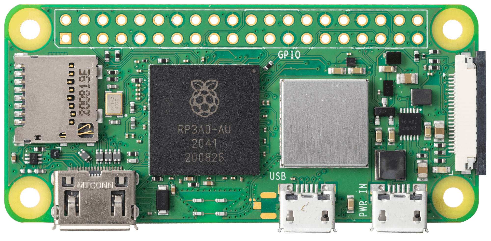
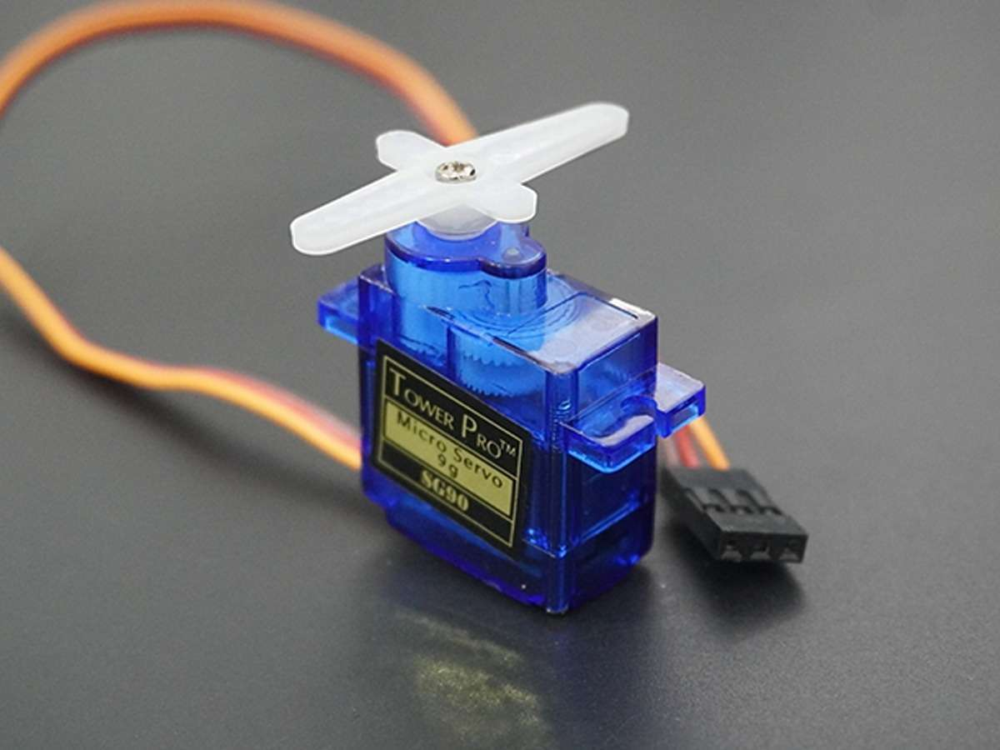
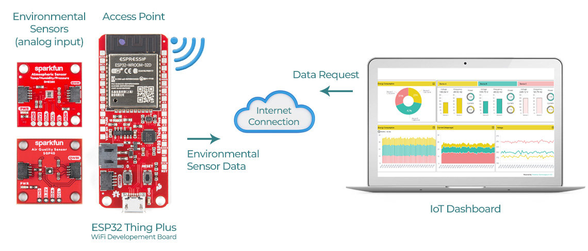
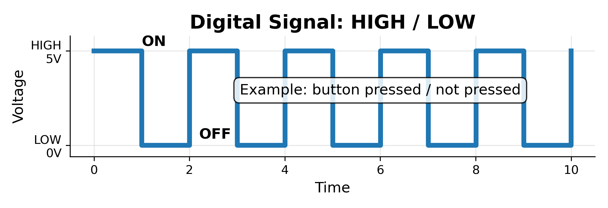
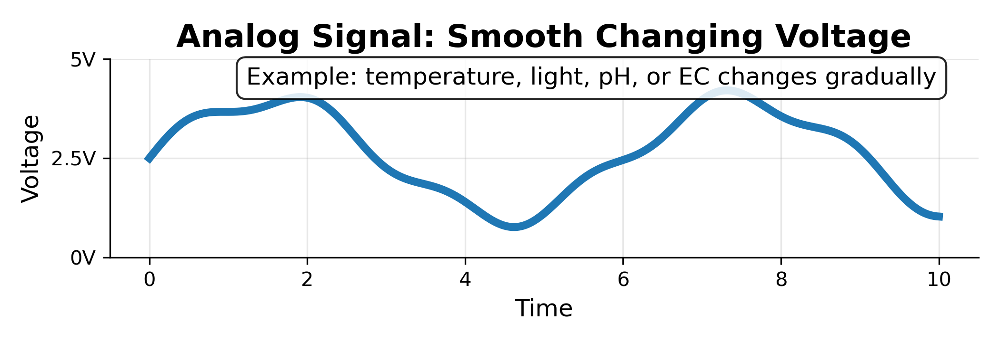

Embedded systems, IoT, and greenhouse sensors for high-school explorers
A smart greenhouse is like a plant care robot. It can notice what is happening, remember the data, and help people make better decisions.
| Camp Day | Main Question | What You Build Toward |
|---|---|---|
| Day 1 | What is controlled environment agriculture? | Indoor farming systems and Arduino basics |
| Day 2 | How do we measure the greenhouse? | Sensor data collection and IoT thinking |
| Day 3 | How can cameras help monitor plants? | Plant images and computer vision ideas |
| Day 4 | How can IoT and ML solve real problems? | Team presentations and application ideas |
Definition: An embedded system is a small microcontroller based system designed to perform a specific task, consisting of hardware and software components.
It is usually hidden inside the product. You may not see a keyboard, screen, or mouse, but there is still a computer making decisions.
Metaphor: An embedded system is like a reflex. When your hand touches something hot, your body reacts quickly. In the same way, an embedded controller reacts to sensor readings.

| Feature | General PC / Laptop | Embedded System |
|---|---|---|
| Main purpose | Many tasks: homework, games, web browsing, video editing | One focused job: read sensors, control motors, run a machine |
| User interface | Screen, keyboard, mouse, apps | Often no screen; may only have buttons, LEDs, or automatic control |
| Power use | Usually higher power | Usually lower power, can run from batteries or small adapters |
| Timing | Human-paced | Often needs fast, repeated, reliable responses |
| Example | School laptop | Car airbag controller, thermostat, irrigation controller, Arduino sensor node |
Simple way to remember: a PC is a toolbox with many tools. An embedded system is one tool designed to do one job very well.

A modern car contains many embedded systems. They are small computers working together while you drive.
Greenhouse connection: a smart greenhouse also has many small control tasks happening at the same time.
They can react immediately when a sensor value changes.
They can check the same condition every second without getting tired.
They can run small devices without needing a full computer.
They are designed for one focused job, so they can be stable and predictable.
Greenhouse example: If the water level becomes too low at 2:00 am, an embedded controller can turn on an alarm or pump even when no person is watching.
A microcontroller is a tiny computer on one chip. It usually contains a processor, memory, and input/output pins.
It is the part of an embedded system that runs the code and connects to sensors and actuators.
Think of it as:
microcontroller = small brain + memory + connection pins


Example: If the temperature is above 30°C, Arduino can send an output signal to turn on a fan.
A sensor detects something in the real world and turns it into data.
Metaphor: sensors are the greenhouse’s eyes, ears, nose, and skin.
Examples: DHT11, PAR sensor, pH sensor, EC sensor, ultrasonic sensor, camera.
An actuator receives a signal and makes something happen physically.
Metaphor: actuators are the greenhouse’s hands and muscles.
Examples: fan, water pump, LED light, valve, buzzer, servo motor.
DHT11 is a small digital sensor that measures air temperature and relative humidity.
It is useful because plants lose water faster when air is hot and dry.
Greenhouse question: Is the air comfortable for lettuce?
Example response: If the DHT11 reads 32°C and low humidity, the system may turn on a fan or send an alert.


A servo motor is an actuator that rotates to a commanded angle, such as 0°, 90°, or 180°.
It is like a tiny robotic wrist. Instead of just spinning forever, it moves to a position.
Greenhouse examples:
IoT means Internet of Things.
It means real-world devices can collect data and share it through a network, often to a phone, computer, cloud database, or dashboard.
Key idea: IoT lets a greenhouse “send messages” using data.
Example: A greenhouse sensor measures temperature every minute. The data appears on a dashboard, so a grower can check conditions from home.

Why this matters: One reading is a snapshot. Many readings over time become a story about how the greenhouse changes during the day.
Machine learning learns from examples. In a greenhouse, examples can be sensor readings, camera images, plant growth measurements, and control actions.
Example AI question: Can yesterday’s temperature, humidity, light, and water-level data help predict whether plants will need more irrigation tomorrow?
Plants cannot directly tell us when something is wrong.
Embedded systems and IoT help us listen to plants through data.
Without data: we guess.
With data: we observe, compare, and improve.
Air temperature and humidity
Plant-useful light
Acidic or basic water
Total dissolved salts
Distance or water level
Read, store, and share data

Like a light switch: HIGH/LOW, 1/0, yes/no, or a timed digital message.

Like a dimmer knob: the value can gradually increase or decrease.
Air temperature and humidity
Plant-useful light intensity
How acidic/basic the nutrient solution is
How much dissolved fertilizer is in the water
Distance, water level, or object position
The DHT11 is like a small weather station. It measures how warm the air is and how much water vapor is in the air.
In a greenhouse, these two numbers help us understand plant comfort.
Measures air temperature and relative humidity.
Scenario: The DHT11 reports warm air and low humidity.
What it might mean: plants may lose water faster, like a person sweating on a hot day.
Possible response: turn on a fan, adjust misting, or check irrigation.
// Simple idea: read temperature and humidity, then print them
// In Arduino, DHT11 usually needs a DHT sensor library.
Temperature = sensor reading from DHT11
Humidity = sensor reading from DHT11
if (Temperature is high and Humidity is low) {
turn on warning light or fan
}PAR means Photosynthetically Active Radiation: the part of light plants use for photosynthesis.
A PAR sensor measures how much useful light is reaching the leaves.

Measures light that plants can use.
pH tells us whether water is acidic, neutral, or basic.
Plants care about pH because it changes how easily roots can take up nutrients.

Measures acidity/basicity of the nutrient solution.
EC means electrical conductivity. It tells us how easily electricity moves through the nutrient solution.
More dissolved ions usually means higher EC. In hydroponics, EC is a quick clue about fertilizer strength.

Estimates total dissolved fertilizer ions.
An ultrasonic sensor sends out a sound pulse and listens for the echo.
It measures how long the echo takes to come back. Longer time means farther distance.

Measures distance using sound echoes.

| Sensor | What it measures | Greenhouse question it helps answer | Possible action |
|---|---|---|---|
| DHT11 | Temperature and humidity | Is the air comfortable for plants? | Turn fan, heater, humidifier, or alarm on/off |
| PAR | Plant-useful light | Are leaves receiving enough light? | Adjust LED height, brightness, or schedule |
| pH | Acidity/basicity | Can roots access nutrients easily? | Add pH up/down or warning signal |
| EC | Total dissolved ions | Is nutrient solution weak or strong? | Add water or fertilizer carefully |
| Ultrasonic | Distance/water level | Is the reservoir running low? | Trigger refill pump or alarm |
Many sensors output a voltage. Arduino reads this voltage as a number, then we convert the number into useful data.
const int sensorPin = A0;
void setup() {
Serial.begin(9600);
}
void loop() {
int rawValue = analogRead(sensorPin);
// Convert raw 0–1023 reading into voltage
float voltage = rawValue * (5.0 / 1023.0);
Serial.print("Raw value: ");
Serial.print(rawValue);
Serial.print(" | Voltage: ");
Serial.println(voltage);
delay(500);
}For ultrasonic sensors, Arduino measures time. Then it uses the speed of sound to estimate distance.
const int trigPin = 9;
const int echoPin = 10;
void setup() {
Serial.begin(9600);
pinMode(trigPin, OUTPUT);
pinMode(echoPin, INPUT);
}
void loop() {
digitalWrite(trigPin, LOW);
delayMicroseconds(2);
digitalWrite(trigPin, HIGH);
delayMicroseconds(10);
digitalWrite(trigPin, LOW);
long duration = pulseIn(echoPin, HIGH);
float distanceCm = duration * 0.0343 / 2.0;
Serial.print("Distance: ");
Serial.print(distanceCm);
Serial.println(" cm");
delay(500);
}Compare with known references so the sensor learns the correct scale.
A sensor in the wrong place can tell the wrong story.
Water sensors can drift if probes get dirty or dry.
The microcontroller collects all sensor readings and sends them to a computer or dashboard. Then we can decide what to adjust.